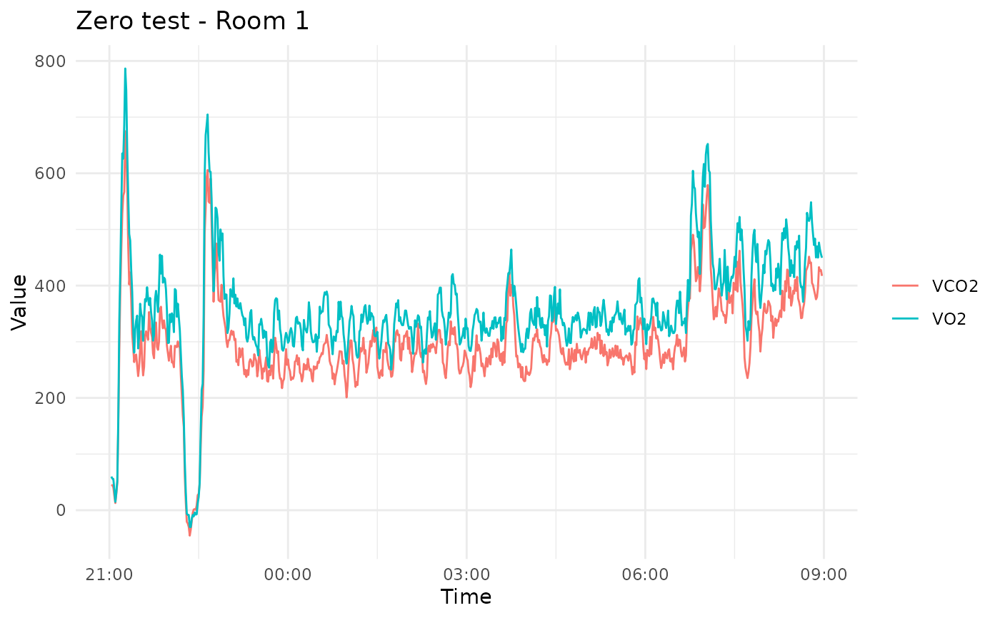
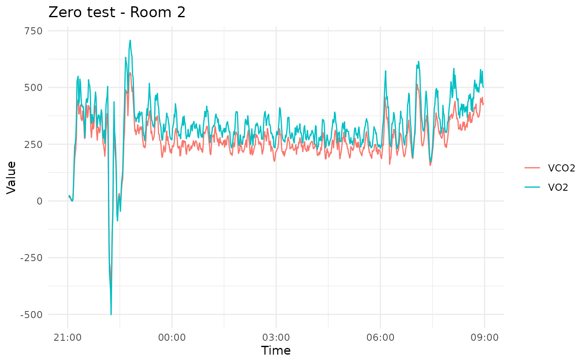

This function preprocesses a WRIC data file, plots VO2 and VCO2 over time, and returns basic statistics (mean, SD, min, max, slope). For version 1 files, separate plots and statistics are returned for Room 1 and Room 2. For version 2 files, a single dataset is processed.
Usage
analyse_zero_test(
filepath,
code = "id",
manual = NULL,
save_csv = FALSE,
path_to_save = NULL,
combine = TRUE,
method = "mean",
start = NULL,
end = NULL,
notefilepath = NULL,
keywords_dict = NULL,
entry_exit_dict = NULL
)Arguments
- filepath
Path to the wric .txt file.
- code
Method for generating subject IDs ("id", "id+comment", "study+id" (only for software v2), or "manual").
- manual
Custom codes for subjects in Room 1 and Room 2 if
codeis "manual".- save_csv
Logical, whether to save extracted metadata and data to CSV files.
- path_to_save
Directory path for saving CSV files, NULL uses the current directory.
- combine
Logical, whether to combine S1 and S2 measurements.
- method
Method for combining measurements ("mean", "median", "s1", "s2", "min", "max").
- start
character or POSIXct or NULL, rows before this will be removed, if NULL takes first row e.g "2023-11-13 11:43:00"
- end
character or POSIXct or NULL, rows after this will be removed, if NULL takes last row e.g "2023-11-13 11:43:00"
- notefilepath
String, Directory path of the corresponding note file (.txt)
- keywords_dict
list, optional A dictionary of keywords used to extract protocol events from a note file. Each entry should be a named list with:
- keywords
A character vector of keywords or phrases to match in the note comment. Matching is case-insensitive.
- value
Numeric protocol value to assign when the keyword is detected.
- type
Optional character, either "instant" or omitted. "instant" events are applied at the specified timestamp and revert to the previous protocol immediately after. Non-instant events set the protocol until another event occurs.
Behavior rules:
- Non-instant events
Set the protocol value from their timestamp until another event overwrites it or until a stop keyword sets it to 0.
- Instant events
Apply only at the timestamp of the note line, then revert to the protocol that was active immediately before.
- Stop keywords
Always set the protocol to 0, regardless of previous state, unless overridden by an instant event.
If
NULL, a default set of keywords is used.- entry_exit_dict
Nested List, used to extract entry/exit times from note file
Examples
filepath <- system.file("extdata", "data.txt", package = "wrictools")
analyse_zero_test(filepath)
#> Rows: 717 Columns: 67
#> ── Column specification ────────────────────────────────────────────────────────
#> Delimiter: "\t"
#> chr (4): X1, X18, X35, X52
#> dbl (56): X3, X4, X5, X6, X7, X8, X9, X10, X11, X12, X13, X14, X15, X16, X2...
#> lgl (3): X17, X34, X51
#> time (4): X2, X19, X36, X53
#>
#> ℹ Use `spec()` to retrieve the full column specification for this data.
#> ℹ Specify the column types or set `show_col_types = FALSE` to quiet this message.


#> $room1
#> variable mean sd min max slope
#> 1 VO2 356.7205 100.54488 -29.90960 786.6187 0.002766024
#> 2 VCO2 298.4697 87.95359 -45.17043 674.9738 0.002499467
#>
#> $room2
#> variable mean sd min max slope
#> 1 VO2 332.0050 122.09571 -500.9322 708.2423 0.001944661
#> 2 VCO2 267.9337 99.32789 -413.3808 565.4705 0.001476097
#>